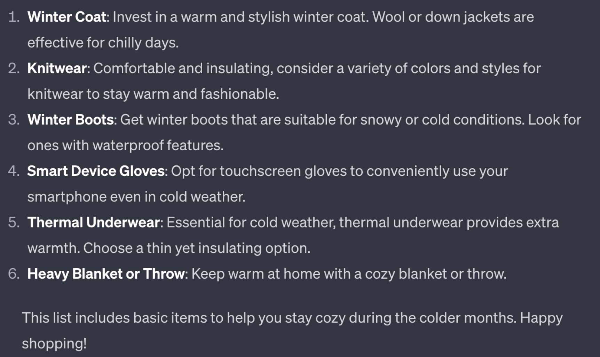

| type | posts | |
|---|---|---|
| 1 | ENTP | 'I'm finding the lack of me in these posts ver... |
| 7 | INTJ | 'I tend to build up a collection of things on ... |
| 10 | INFJ | 'One time my parents were fighting over my dad... |
???
심재인
Department of Statistics, Jeonbuk National University
Outline
Introduction
Introduction to MBTI Data and Experimental Design
Data Collection Process
Performance Improvement in Imbalanced Data
Qualitative Study of Data Generated by GPT
Introduction
Introduction to ChatGPT
ChatGPT is a language model developed by OpenAI, functioning as an interactive artificial intelligence for conversation.
Its primary capabilities lie in natural language understanding and generation. Leveraging the provided data, this model can respond to questions on various topics, engage in conversation, and generate sentences, paragraphs, or entire pieces of text.
Introduction
Figure1: GPT 사용예시
Introduction
Text Augmentation using GPT-Generated Text
- Text generated using GPT can contribute to the improvement of models. It can be utilized to evaluate and enhance the performance of models (Oh, Jung, et al. 2023).
- articularly, this performance enhancement is expected to be pronounced in the case of imbalanced data.
Value Comparison between GPT-Generated Text and Human-Written Text
- Text generated using GPT and text written by humans may exhibit some differences. GPT, trained on extensive data, can produce consistently high-quality text, while human-written text may reflect personal experiences and knowledge.
- Does text generated by GPT possess the same value as text written by humans?
Introduction to MBTI Data and Experimental Design
Introduction to MBTI Data and Experimental Design
IIntroduction to MBTI Data and Experimental Design
Verification of Similarity:
kaggle에서 수집한 ESTP 데이터
Splinter Cell Blacklist for Xbox 360. If you get hated on then it’s because you as a person have something to work on. I often come off to people with the opposite of my intention, if I don’t listen to my gut. Sometimes I over think my natural social skills and come off as a sarcastic douche.
ChatGPT로 생성한 ESTP 데이터
Today, I had a fantastic experience enjoying adventures in nature! Hiking up a tall mountain, I experienced the beauty of the great outdoors. The view from the summit was absolutely breathtaking. Adventures like these always bring new challenges and a sense of accomplishment, so I want to do more of them!
Guinn, Curry. “Assessing Author Personality Types Using ChatGPT.”
Introduction to MBTI Data and Experimental Design

Data Collection Process
Title: GPT Data Collection Process
Data Collection Process:
Define the MBTI for Performance Measurement.
Define the Topic: Clearly define a topic for ChatGPT, presenting scenarios such as traveling to a destination or being invited to a friend’s birthday party. Request predictions on how one might post on Instagram in such situations.
Setting such conditions helps define the scope of generated data, preventing responses from being too similar.
Utilizing the GPT model, automatically generate posts for each MBTI personality type based on the given topics and conditions.
Responses vary and are diverse depending on the identified MBTI when conditions are provided.
Review the initially generated data and adjust conditions as needed to align with research objectives.
Modifications were made to the generated content to better fit the research goals. Specifically, for an Instagram-like post, the MBTI and emoji included in the original sentence were removed as requested.
Additionally, adjustments were made to ensure the character count per question is around 1,500 aiming for a balance similar to real-world data.
This process aimed to enhance the quality of the data, and the selected data was finalized.
Performance Improvement in Imbalanced Data
Challenges in Data Collection
Performance Improvement in Imbalanced Data
Challenges in Data Collection
Class Name


Performance Improvement in Imbalanced Data
Challenges in Data Collection
Emoji


Performance Improvement in Imbalanced Data
Challenges in Data Collection
Variation in Generated Text Length


Performance Improvement in Imbalanced Data
Challenges in Data Collection
Outcome Analysis

Performance Improvement in Imbalanced Data
Challenges in Data Collection
MBTI example


Qualitative Study of Data Generated by GPT
Data Analaysis
Qualitative Study of Data Generated by GPT
Data Analaysis
MBTI example
References
Qualitative Study of Data Generated by GPT